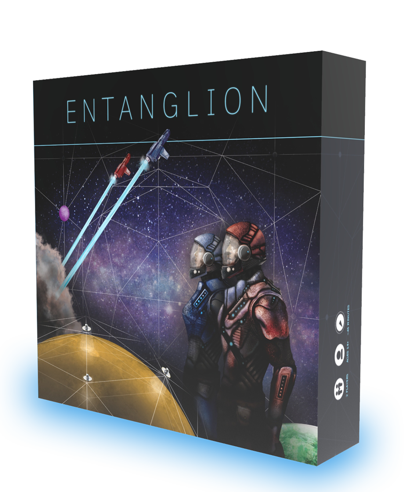

První kvantová open-source desková hra na světě. Ovládni nové galaxie při svém úkolu postavit kvantový počítač.

2 Hráči
Věk 14+
~45 Minut


2 Hráči
Věk 14+
~45 Minut
Blahopřejeme, právě jste se stal novým kapitánem galaktické přepravní společnosti! Nyní máte konečně příležitost vše zdokonalit. Vydáváte se na dobrodružnou cestu k zrekonstruování dávno zapomenutého kvantového počítače.
Entanglion je desková hra pro dva hráče, kteří spolu musejí spolupracovat. Cílem hry je znovu postavit kvantový počítač z davné doby. Společně s vaším spoluhráčem musíte probádat tři galaxie kvantového prostoru - Centarius, Superious a Entaglion - a získat všech osm součástí kvantového počítače. Nesmí vás ale odhalit obranné mechanismy, které mají za úkol kvantové součásti střežit!
Jdete do toho?
Navštivte GitHub , stáhněte si zdrojové soubory a vytiskněte si svou vlastní kopii hry Entanglion nebo si kupte kompletní sadu na stránce The Game Crafter (U.S.).
Pokud jste vyučující, který chce použít Entanglion jako výukovou aktivitu pro třídu, kontaktujte nás.
Hra Entanglion byla vytvořena v IBM Research , aby seznámila hráče se základními koncepty kvantových počítačů, včetně qubitů, superpozice, kvantového provázání, měření a chyb. Entanglion také ukazuje hráčum různé hardwarové a softwarové komponenty používané ve skutečných kvantových počítačích.
Herní design: Maryam Ashoori & Justin D. Weisz
Ilustrace: Aaron Cox, Michael L. Kenney
Kvantová věda: Jay M. Gambetta, Jerry M. Chow, Lev S. Bishop
Jan Louda, Tomáš Feige, Magdalena Štachová